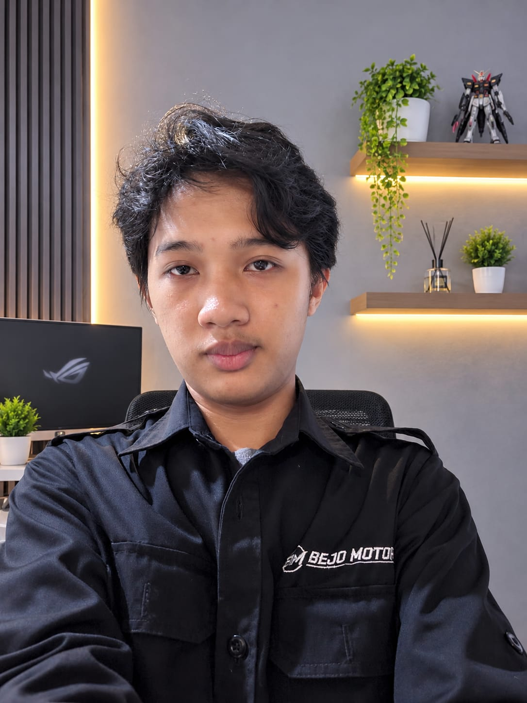

Ardiansyah Daffa Shaki Ramadhani
23.53.027628

Mahasiswa Fakultas Bisnis dan Informatika, Universitas Muhammadiyah Palangka Raya yang sedang mendalami komputasi awan. Situs ini merangkum materi yang saya pelajari dan tugas-tugas yang saya kerjakan.
- 23.53.027628
- Topik
- Cloud Computing
- Tugas
- 03
01
Cloud Computing →

02